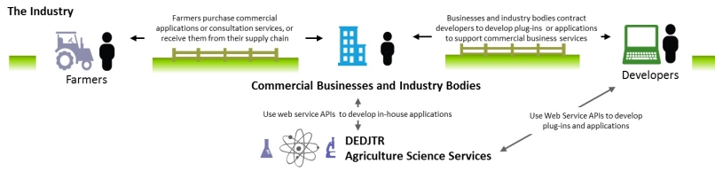
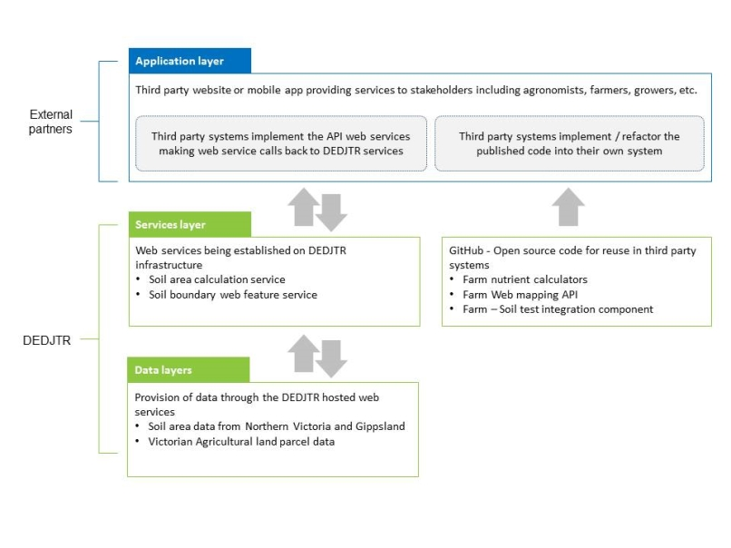

FarmBuild is delivered by Agriculture Victoria, a division of the Victorian Government's Department of Economic Development, Jobs, Transport and Resources (DEDJTR).
A short video on FarmBuild is now available on YouTube
What does FarmBuild do?
FarmBuild delivers agricultural science such as algorithms, calculators, and key agricultural datasets as online functions. The online functions integrate spatial tools and interfaces with the science knowledge of Agriculture Victoria to provide agricultural industries with the ability to customise information through the spatial context of the farm. An open source repository of web services and application programming interfaces (API) makes FarmBuild accessible to be used by anyone, at any time. Web service APIs and associated data sources, and open source JavaScript API sample code and pages, are available for users to build their own digital tools and support their clients.
Current online functions available through FarmBuild include mapping, farm nutrient balance models and soil information. New functions and data delivery will be developed for FarmBuild over the coming years. For more information please visit the Online functions page.
Who is FarmBuild for?
Commercial business and industry bodies will be the next users of FarmBuild. Most agriculture businesses will need to collaborate with software developers to be able to use FarmBuild effectively. The FarmBuild project aims to work with industry bodies and software developers to facilitate the use of FarmBuild, and to develop new components for FarmBuild.
The end users of FarmBuild are the farmers, land managers and advisors making decisions on farm. Application of the science is essential to support end users and meet the demands of growing markets, as well as to demonstrate responsible management of natural resources.
Why is FarmBuild different?
This unique distribution model allows the Victorian Government to deliver agricultural science more effectively, without the demands of creating and maintaining the digital tools that support on-farm decisions. FarmBuild will better equip users, such as agricultural service providers, to develop their own digital tools using their knowledge of how to improve on-farm practices.
Why do we need FarmBuild?
The Victorian Government provides agricultural science and data to a wide audience, including farmers, land managers, agricultural businesses, the education sector, other research institutions and Government agencies. Victorian Government agricultural research has, over many decades, developed a wide range of models, measurement tools and datasets to improve:
- the use of farming inputs (e.g. water and nutrients);
- soil health;
- product yield and quality; and
- offsite impacts.
FarmBuild provides a way to translate this science into practical, everyday decision support on-farm by using digital technology and services.
More detail on functions
is available here
Frequently asked questions
are answered here
Register for FarmBuild
For more information on registering, please click here
Tweet